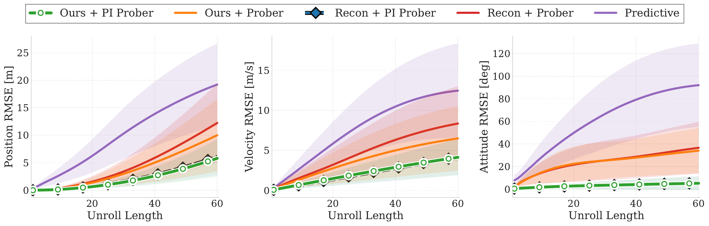
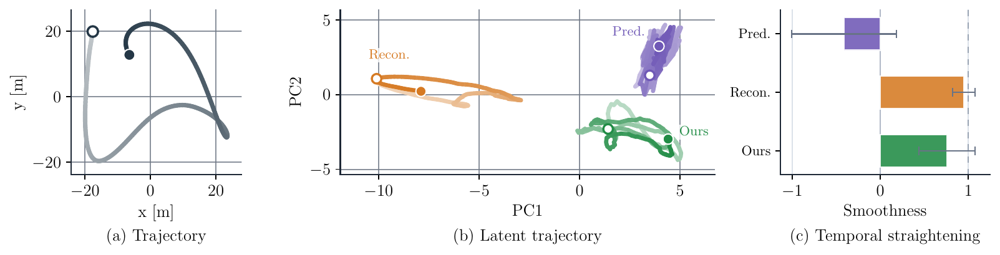
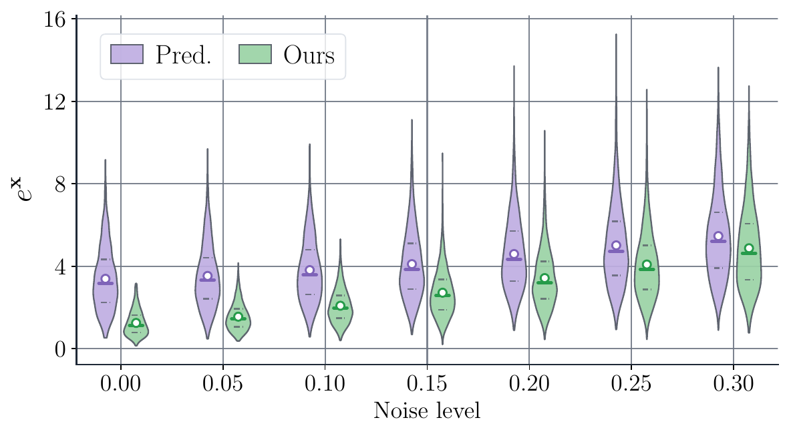

Tracking Visualization
SkyJEPA supports real-world closed-loop tracking across nominal flight, propeller switching, and payload settings.
Accurate dynamics models are critical for informed decision-making in robotic systems, particularly for agile aerial vehicles operating under uncertainty. Neural network dynamics models are attractive for capturing complex nonlinear effects, but existing predictive approaches struggle with long-horizon forecasting because their autoregressive rollout mechanism amplifies errors over time. Joint Embedding Predictive Architectures (JEPAs) offer a compelling alternative by modeling dynamics in latent space, yet prior JEPA-style methods for robot navigation have been studied primarily for kinematic-level planning, with limited investigation in high-frequency control.
In this work, we introduce the JEPA-style model for real-time quadrotor control. The proposed approach combines a latent dynamics model with a novel physics-inspired prober that maps frozen latents to interpretable state, enabling physically grounded long-horizon prediction. Additionally, we combine the learned model with a sampling-based optimal control solution to take advantage of its predictive capabilities for real-time control on embedded hardware.
Finally, to reduce the dependence on expensive and unsafe real-world data collection, we develop a structured pipeline for automated dataset generation. Extensive open-loop and outdoor closed-loop experiments demonstrate accurate prediction, robust zero-shot sim-to-real transfer, and strong generalization across diverse operating conditions.

SkyJEPA learns a latent dynamics model with a physics-inspired prober that maps abstract embeddings to physically meaningful states for stable long-horizon quadrotor prediction.
The model is trained entirely on domain-randomized simulation data, then deployed inside a sampling-based controller for real-time zero-shot sim-to-real flight.
SkyJEPA supports real-world closed-loop tracking across nominal flight, propeller switching, and payload settings.
Sampling-based control rollouts remain consistent across trajectory tracking, propeller switching, and payload conditions.
Diverse domain-randomized simulation data is sufficient for reliable deployment in real outdoor flights.
Latent-space dynamics modeling improves long-horizon prediction over direct predictive modeling.

Latent models learn temporally smoother trajectories, suggesting smoothness emerges as a useful property.

The JEPA-style model remains more accurate under corrupted inputs, improving robustness to noisy state estimates.

@article{rao2026skyjepa,
title = {SkyJEPA: Learning Long-Horizon World Models for Zero-Shot Sim-to-Real Control of Quadrotors},
author = {Rao, Pratyaksh and Zhang, Wancong and Balestriero, Randall and LeCun, Yann and Loianno, Giuseppe},
journal = {arXiv preprint},
year = {2026},
}